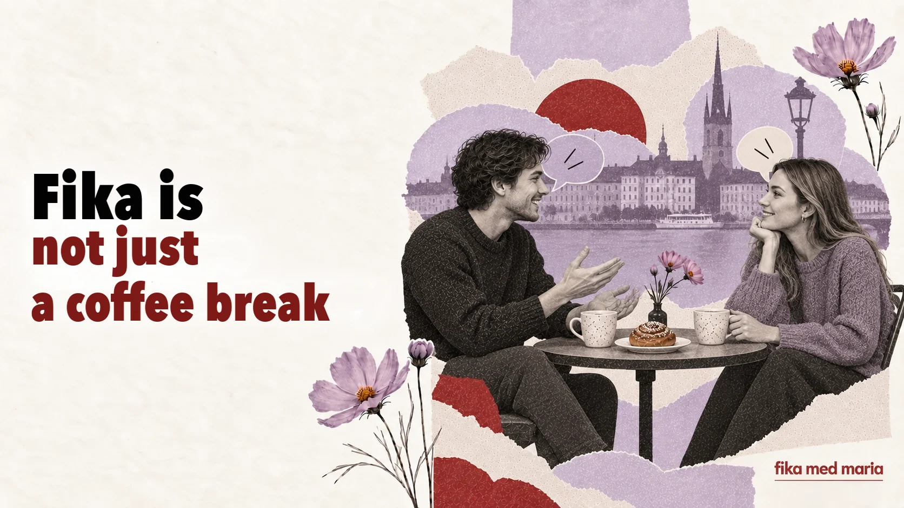

Fika is not a coffee break: how one ritual explains Swedish relationships

If you translate fika as “coffee break”, the meaning seems clear enough. But the most important part disappears: coffee is only an excuse, while fika itself builds closeness.
It’s a brief space in which people stop being just colleagues, neighbours or people in a meeting. They sit down together, talk about everyday things and build a connection without needing a big occasion.
Fika is a noun, a verb and an invitation
In Swedish you can say:
Ska vi ta en fika?
Shall we have a coffee / meet up for a fika?
Vi fikade efter jobbet.
We went for a fika after work.
Det är dags för fika.
Time for fika.
The drink doesn’t have to be coffee. You can have tea or something cold. What matters more is taking a pause and sharing it with others.
Fika at work isn’t quite free time
In some teams, fika happens regularly and becomes part of the rhythm of work. Formally it’s a break, but that’s exactly where a newcomer can hear things that aren’t in any of the documents:
- who does what;
- how colleagues joke;
- which topics everyone cares about;
- what the internal abbreviations mean;
- how people in the team usually communicate.
If you keep skipping fika, you can end up outside the team’s informal life without meaning to. That doesn’t mean you always have to be there. But sometimes twenty minutes at a shared table does more to help you integrate than yet another work email.
What people talk about
Safe topics depend on the group, but they often include:
- the weekend;
- the weather;
- food;
- TV series;
- travel;
- household chores;
- plans for the holidays;
- the little events of the day.
You can start with something simple:
Har du några planer för helgen?
Do you have any plans for the weekend?
Har du sett den nya serien?
Have you watched the new series?
Vad gott det ser ut! Har du bakat själv?
That looks so delicious! Did you bake it yourself?
Who pays
If friends meet in a café, each person will often pay for their own order. There’s no need to automatically read this as coldness or stinginess: paying separately lessens the feeling of owing something and makes meeting up simpler.
If you’ve been invited to someone’s home, it’s a good idea to ask:
Ska jag ta med något?
Shall I bring anything?
Even if the host replies Nej, det behövs inte, the question shows consideration.
Tack för fikat
After meeting up, you can say:
Tack för fikat!
Thank you for the fika / for the treat and the time together.
If you met yesterday or a few days ago:
Tack för senast!
Thank you for the last time we met.
This phrase doesn’t call for a long speech. It simply confirms: I enjoyed it, and I remember our time together.
Why Fika med Maria
The name Fika med Maria doesn’t promise a dry recital of rules. It invites you to sit side by side, ask a “silly” question, get things wrong, laugh and gradually make Swedish part of your life.
A lesson can give you knowledge. Fika creates a space where you feel like talking.
Make your invitation specific rather than vague:
Vill du ta en fika på torsdag efter jobbet?
And if you’re not sure about the time:
Jag tar gärna en fika någon dag. När passar det dig?
At Speak Café we don’t meet for perfect answers, but for real conversation, new words and the habit of speaking. Speak Café.
Does fika have to include something sweet?
No. Pastries are common, but it’s not about any particular food.
Can you invite someone you don’t know well for a fika?
Yes. It’s an easier, less formal option than a full dinner at home.